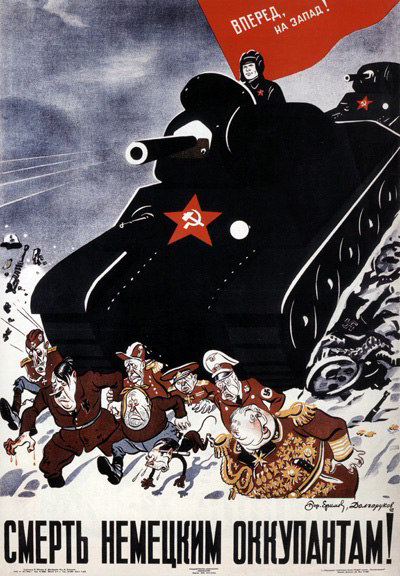

Operation Barbarossa: Hitler Invades Russia
 In June 1941 Hitler, still frustrated by his failure to conquer Great Britain, turned his wrath against his former partner, the Soviet Union, his fatal mistake. (Napoleon had made the same miscalculation in 1812.) Hitler felt that the Soviet Union was hampered by internal weaknesses of the communist system. He was aided by the fact that even when intelligence reports reached Premier Stalin that an invasion was imminent, Stalin apparently did not believe them and failed to mobilize the Soviet army.
In June 1941 Hitler, still frustrated by his failure to conquer Great Britain, turned his wrath against his former partner, the Soviet Union, his fatal mistake. (Napoleon had made the same miscalculation in 1812.) Hitler felt that the Soviet Union was hampered by internal weaknesses of the communist system. He was aided by the fact that even when intelligence reports reached Premier Stalin that an invasion was imminent, Stalin apparently did not believe them and failed to mobilize the Soviet army.
Over four million German troops with thousands of tanks and guns crossed the line of departure of June 22. German Panzer units with air support initially drove deep into the heart of Russia, reaching the outskirts of Moscow. The Soviets launched a counteroffensive in December in what was the largest battle with the greatest number of combatants ever fought anywhere. Hitler's hopes for a quick victory were smashed, and the Russian winter and the huge Soviet Army ultimately proved be too much for Hitler's Wehrmacht. With the loss of an army of 600,000 men at Stalingrad in late 1942 through early 1943, the tide in Europe turned, and the huge Russian army, supplied heavily by American industry, began to drive the Germans off Russian soil and back toward Berlin. Stalingrad was the great turning point of the war in Europe.
December 11, 1941. Following the Japanese attack on Pearl Harbor, Hitler declared war on the United States, which, along with the Soviet victory at Stalingrad, sealed Germany's fate. Although formally allied, Germany and Japan fought in separate spheres; World War II was really two wars going on at the same time, one in Europe and one in Asia.
Interactive map of Operation Barbarossa